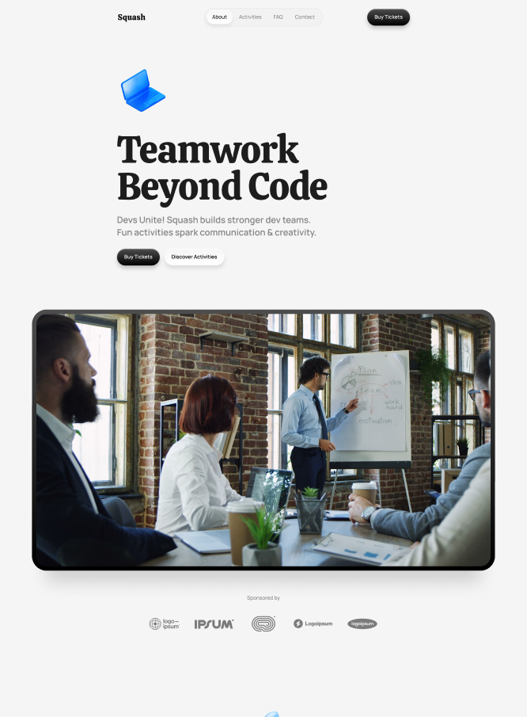

Back to Home
Squash
We created Squash as a dynamic website solution tailored to highlight development team-building programs. Squash offers a modern, fully customizable design that enables a compelling brand narrative, creating a visually engaging experience. The website emphasizes the unique benefits of team-building initiatives, showcasing how they enhance creativity, collaboration, and overall team success. With a focus on clear and compelling content, Squash helps attract clients seeking to unlock their teams' potential, establishing a thriving online presence that resonates with the target audience.
Industry
Events
Type of Work
Website Development
Year
2024
